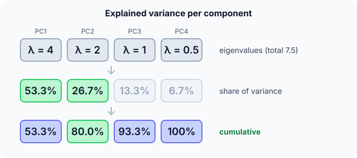

Prerequisites
- Variance and covariance.
- Vectors, dot products and projections.
- Standardization.
The analogy
Everyday analogy
Think of photographing a long, flat object such as a surfboard. A photo from above shows almost everything; a photo from the end shows almost nothing.
PCA picks the "camera angles" that show the most spread in the data: the first component is the best single view, the second the best view at a right angle to it, and so on.
How it works
Before PCA: centre each feature (subtract its mean) and usually standardize it, so that features measured in large units don't dominate the variance.
Start with explained variance by hand
The covariance matrix of 4 standardized-ish features has eigenvalues $\lambda = 4, 2, 1, 0.5$. Each eigenvalue is the variance along one principal component. Predict, then open "Check".
Example: predict before you read
Step 1. Total variance, and the share of the first component.
Check
Total $= 4 + 2 + 1 + 0.5 = 7.5$. First share $= 4/7.5 \approx 53.3\%$.
Step 2. Cover the next line and guess: the shares of components 2, 3 and 4.
Check
$2/7.5 \approx 26.7\%$, $1/7.5 \approx 13.3\%$, $0.5/7.5 \approx 6.7\%$.
Step 3. How much variance do the first two components keep together, and how many components do you need for 90%?
Check
80% with two. Three give $7/7.5 \approx 93.3\%$, so 3 components reach 90%.

Quick recall: Before reading further, cover the text above and say out loud: what does an eigenvalue tell you in PCA?
Check your answer
How much of the data's variance lies along the corresponding principal component.
Finish the picture: projecting a point
Take 2-D points (1, 1), (2, 2), (3, 3). They all lie on one line.
- The first component. Predict its direction.
Check
$v_1 = (1, 1)/\sqrt{2} \approx (0.707, 0.707)$: along the line.
- Project the centred point $(3, 3) - (2, 2) = (1, 1)$ onto $v_1$. Predict the 1-D coordinate.
Check
$1 \cdot 0.707 + 1 \cdot 0.707 \approx 1.414$. One number per point, with no information lost here, since PC2 has variance 0.
Quick recall: Without scrolling up, say out loud: for the points (1, 1), (2, 2), (3, 3), what is the first principal component, and what share of variance does it explain?
Check your answer
The direction $(1, 1)/\sqrt{2}$; it explains 100%, because all the spread is along that line.
Full worked calculation
Full PCA by hand on four 2-D points, (1, 1), (2, 3), (3, 2), (4, 4): centre, covariance, eigenvalues, eigenvector, projection, and what is lost when we keep only one component.
| Point | Centred $(x - 2.5,\; y - 2.5)$ | $x_c^2$ | $y_c^2$ | $x_c y_c$ | PC1 coordinate |
|---|---|---|---|---|---|
| (1, 1) | (−1.5, −1.5) | 2.25 | 2.25 | 2.25 | −2.121 |
| (2, 3) | (−0.5, 0.5) | 0.25 | 0.25 | −0.25 | 0 |
| (3, 2) | (0.5, −0.5) | 0.25 | 0.25 | −0.25 | 0 |
| (4, 4) | (1.5, 1.5) | 2.25 | 2.25 | 2.25 | 2.121 |
| Sum | 5 | 5 | 4 |
-
1Centre the data
$$\bar x = \frac{1 + 2 + 3 + 4}{4} = 2.5, \qquad \bar y = \frac{1 + 3 + 2 + 4}{4} = 2.5$$PCA looks for directions of spread around the centre, so we subtract the mean from every point first. Without this step the first "component" would just point at the mean.
-
2Covariance matrix
$$C = \frac{1}{n - 1}\begin{pmatrix} \sum x_c^2 & \sum x_c y_c \\ \sum x_c y_c & \sum y_c^2 \end{pmatrix} = \frac{1}{3}\begin{pmatrix} 5 & 4 \\ 4 & 5 \end{pmatrix} = \begin{pmatrix} 1.667 & 1.333 \\ 1.333 & 1.667 \end{pmatrix}$$The diagonal is the variance of each feature; the off-diagonal says they move together (positive). The sums come straight from the table.
-
3Eigenvalues
$$\det(C - \lambda I) = (1.667 - \lambda)^2 - 1.333^2 = 0 \;\Rightarrow\; \lambda = 1.667 \pm 1.333 = 3 \text{ and } 0.333$$Each eigenvalue is the variance of the data along one principal direction. For a symmetric 2×2 matrix with equal diagonals, the eigenvalues are "diagonal ± off-diagonal".
-
4Eigenvectors
$$\lambda_1 = 3: \; v_1 = \tfrac{1}{\sqrt 2}(1, 1) \approx (0.707, 0.707), \qquad \lambda_2 = 0.333: \; v_2 = \tfrac{1}{\sqrt 2}(1, -1)$$Check: $C(1, 1)^\top = (3, 3)^\top = 3 \cdot (1, 1)^\top$. PC1 runs along the diagonal, where the points are spread out; PC2 is perpendicular to it.
-
5Explained variance
$$\frac{\lambda_1}{\lambda_1 + \lambda_2} = \frac{3}{3.333} = 0.9$$PC1 alone keeps 90% of the total variance. If 90% is enough for the task, we can describe each point with one number instead of two.
-
6Project onto PC1
$$z = x_c \cdot v_1: \quad (-1.5, -1.5) \cdot (0.707, 0.707) = -2.121, \qquad (-0.5, 0.5) \cdot (0.707, 0.707) = 0$$One dot product per point gives its new 1-D coordinate. The variance of these coordinates, $(4.5 + 0 + 0 + 4.5)/3 = 3$, is exactly $\lambda_1$.
-
7What is lost
$$\hat x = \bar x + z\,v_1: \quad (2, 3) \to (2.5, 2.5), \quad \text{error} = 0.5^2 + 0.5^2 = 0.5$$Reconstructing from one coordinate puts (2, 3) and (3, 2) both at the centre. The total squared error is $0 + 0.5 + 0.5 + 0 = 1 = \lambda_2 (n - 1)$: we lose exactly the variance of the dropped component.
What the numbers tell us
PCA is: centre, covariance, eigen-decomposition, sort by eigenvalue, project. Here one component keeps 90% of the variance.
The dropped 10% is exactly the spread along PC2; points that differed only in that direction, (2, 3) and (3, 2), become indistinguishable.
The rule in plain words
Centre (and usually standardize) the data, compute its covariance matrix, and find its eigenvectors (directions) and eigenvalues (variances), sorted largest first.
Keep the top $k$ components that explain enough variance (e.g. 90–95%), and represent each point by its projections onto them.
Quick recall: Before you read the code, describe how to compute the explained-variance share of the first $k$ components, in your own words. Then check below.
Check your answer
Add the first $k$ eigenvalues and divide by the sum of all eigenvalues.
The code
Read this code after you have computed the shares by hand. It will make more sense.
double explained(double eig[], int m, int k) { /* share of variance in the first k */
double top = 0, total = 0; /* eig sorted from largest */
for (int i = 0; i < m; i++) { total += eig[i]; if (i < k) top += eig[i]; }
return top / total;
}
double project(double x[], double v[], int d) { /* coordinate of x along unit vector v */
double s = 0;
for (int j = 0; j < d; j++) s += x[j] * v[j];
return s;
}Definition
What you just did, in one line: PCA finds orthogonal directions of maximum variance (the eigenvectors of the covariance matrix) and represents the data by its projections onto the top few of them.
flowchart LR
A["data, d features"] --> B["centre and standardize"]
B --> C["covariance matrix"]
C --> D["eigenvectors + eigenvalues, sorted"]
D --> E["keep top k by explained variance"]
E --> F["project: data with k features"]
How costly is it?
Quick recall: Before looking at the formula, predict: are the principal components correlated with each other?
Check your answer
No. They are orthogonal directions, and the projected data along them is uncorrelated.
The explained-variance ratio of the first $k$ components, with eigenvalues sorted from largest:
$$\text{EVR}(k) = \frac{\sum_{i=1}^{k} \lambda_i}{\sum_{i=1}^{d} \lambda_i} = \frac{4 + 2}{7.5} = 0.80$$| Phase | Cost | Why |
|---|---|---|
| Covariance matrix | $O(nd^2)$ | All pairs of features over $n$ rows |
| Eigendecomposition | $O(d^3)$ | A $d \times d$ matrix |
| Projecting one point | $O(dk)$ | $k$ dot products of length $d$ |
Best for: compressing many correlated numeric features, speeding up later models, and visualising high-dimensional data in 2-D or 3-D.
- Pro: Removes redundancy; components are uncorrelated.
- Pro: Fast, deterministic, with a clear measure of information kept (explained variance).
- Con: Only finds linear structure.
- Con: Components are mixtures of features, so they are harder to interpret; sensitive to scaling.
Warning
PCA keeps directions of large variance, not directions that matter for your target. A low-variance feature can be the most predictive one, and PCA may throw it away.
Exam tip
Given eigenvalues, compute the explained-variance ratios and cumulative sums, then pick the smallest $k$ that reaches the required percentage. Always mention centring and scaling first.
Common mistakes
- Running PCA on unscaled features, so the biggest-unit feature becomes PC1.
- Fitting PCA on all data before the train/test split (leakage).
- Interpreting components as if they were original features.
Try it yourself
Exercise 1 (warm-up)
Eigenvalues 6, 3, 1. What share of the variance does the first component explain, and how many components give at least 90%?
Hint
Total is 10.
Answer
60%. Two components give 90%.
Exercise 2 (a bit harder)
Project the centred points (−1, −1), (0, 0), (1, 1) onto $v_1 = (0.707, 0.707)$ and compute the variance of the projections (population). Compare with $\lambda_1$. Write your answer down before you open it.
Show answer
Projections: −1.414, 0, 1.414. Variance $= (2 + 0 + 2)/3 \approx 1.33$. That equals $\lambda_1$ of the covariance matrix: the variance along PC1 is its eigenvalue.
Did you know?
Did you know?
Karl Pearson described PCA in 1901 as finding "lines and planes of closest fit"; Harold Hotelling developed it further in 1933.
"Eigenfaces" (1991) used PCA on face images: each face is approximated as the average face plus a few principal components, an early face-recognition method.
Key points to remember
If you remember one thing from each line, remember the because.
- Eigenvalues measure variance per component because they are the variance of the data projected onto each eigenvector.
- The first components keep the most information because they are sorted by variance.
- Components are uncorrelated because they are orthogonal eigenvectors of the covariance matrix.
- Scaling matters because variance depends on the units of each feature.
- PCA can drop useful signal because it ignores the target entirely.
Self-check questions
Answer these in order, out loud. They follow the page, so your answers become the script of your video.
- How is PCA like choosing the best camera angle for a surfboard?
Sample answer
It picks the views that show the most spread: the first component is the best single view, the next the best one at a right angle.
- With eigenvalues 4, 2, 1, 0.5, how much variance do the first two components explain?
Sample answer
$6/7.5 = 80\%$.
- Why does
explainedneed the eigenvalues sorted from largest?A good answer says what "the first $k$" must mean.
Sample answer
It adds the first $k$ entries, which must be the $k$ largest variances; unsorted input would mix in small components.
- So what is PCA, in one sentence?
Sample answer
A linear method that finds orthogonal directions of maximum variance and represents data by its projections onto the top few.
- Why does PCA need standardized features?
A good answer uses units.
Sample answer
Variance depends on units: income in euros varies in thousands, age in tens, so without scaling the income direction would dominate PC1 just because of its units.
- What does PCA cost?
Sample answer
$O(nd^2)$ for the covariance matrix plus $O(d^3)$ for the eigendecomposition; projecting a point is $O(dk)$.
- Give two pros and two cons.
Sample answer
Pros: removes redundancy with uncorrelated components, and fast with a clear "information kept" measure. Cons: linear only, and components are hard to interpret and scale-sensitive.
- If you had to teach this to a friend in 2 minutes, what would you leave out, and why?
Sample answer
I'd leave out eigendecomposition details and the cost. I'd keep the camera-angle analogy, the 4-2-1-0.5 explained-variance example, and "keep the directions with the most spread".
External resources
- scikit-learn: PCA: explained variance and examples.
- Setosa: PCA explained visually: an interactive visual explanation.
- Wikipedia: Principal component analysis: derivations and applications.
Videos
- YouTube search: StatQuest PCA step by step: StatQuest's well-known PCA video.